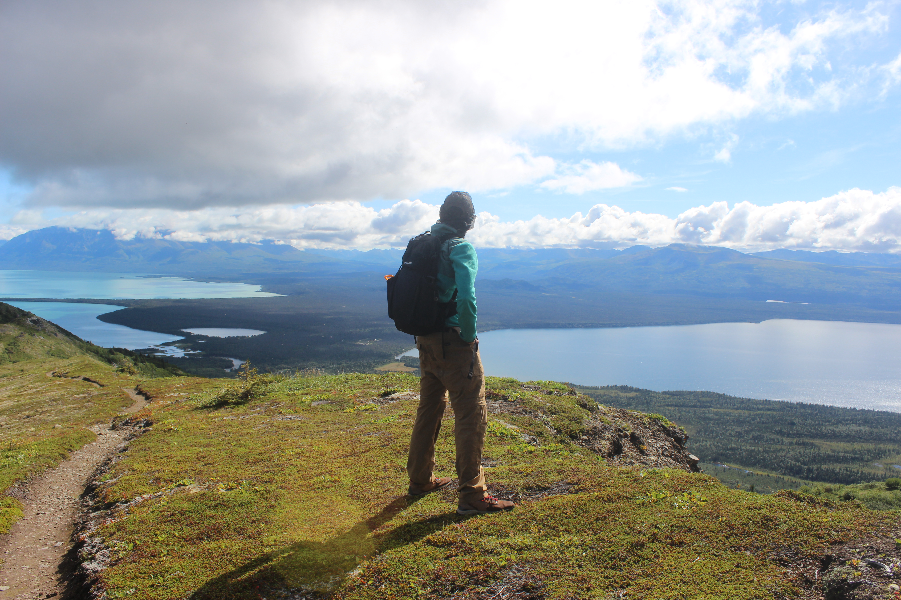

Katmai Calling II: Dumpling Mountain
August 23, 2026
Published on September 28, 2026
“Society, you’re a crazy breed / I hope you’re not lonely without me.” - Jerry Hannan

One of my favorite things about Brooks Camp was the sense of community I felt over the week that I was there. It felt like summer camp for adults, and when I left, I fell into a sort of depression. Two main reasons contributed to this, I think. The first was that I had left Alaska and went from temperatures of about 50 degrees to 100 plus degrees. The second reason was that I left behind a mental state with no outside distractions coming in from society. Try and think about how much news you consume any given week and what that supply of information does to you. It’s quite a significant amount with a large negative effect, I’d bet. The loss of Dolly Parton was the only news or information from the outside world I received my entire time at Katmai. The bar at Brooks Lodge played her music all night after we learned that she had passed to honor her.